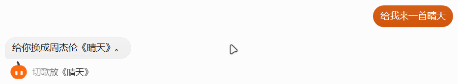
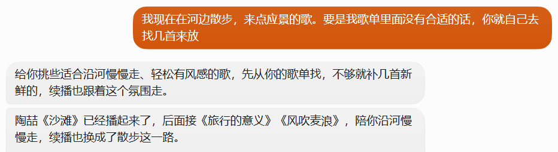
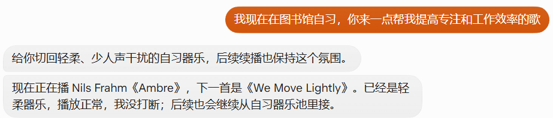
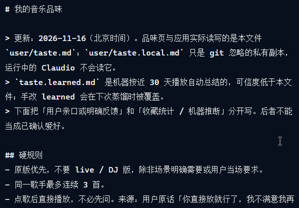
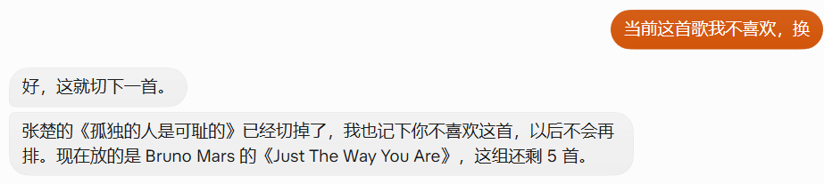

NOW PLAYING
FM 88.8 · STEREO
我如何用 Grok Bot
打造「越用越懂我」的私人电台
Grok Bot 做选歌大脑，自制播放器 Claudio 在后台静默放歌
01:22
10:00
自然语言点歌
「给我来一首晴天」
场景专注模式
「去图书馆自习，来点专注纯音乐」

DJ HOST · 洛伊客
88.0 MHz
88.8 MHz LOIC FM
108.0 MHz
真实对话 · 三种高频点歌场景
01 精准点播
报歌名秒切原版

02 氛围配乐
按场景翻红心，不够自动补新歌

03 目标场景
切回自习器乐池，不打断专注

后台链路 · 从开口到响起
STEP 1
结合红心曲库、taste.md 与长期记忆选歌
STEP 2
按意图立即切歌，或顺延排入续播队列
STEP 3
Claudio 后台静默开播，不打断当前工作
后台无感体验
日常只跟 Grok Bot 说话，
除非暂停或赞踩，Claudio 安静待在后台。
除非暂停或赞踩，Claudio 安静待在后台。

一句话创建
「帮我建一个专职 Bot：管理 Claudio、按场景选歌、持续记住我的品味。」
Grok Bot · 选歌大脑

听懂自然语言，按场景选歌
读写 taste.md，沉淀品味与硬规则
调度播放 API，并持续进化
选歌指令 / API
播放状态 / 赞踩
Claudio · 后台播放器

Electron 托盘静默常驻
酷狗直链自动连播
dfid + 24h 低频保活
01
历年年度报告交给 Bot
先摸清多年听歌轮廓
02
API 扫描 1,700+ 首分类
自动归出轻音乐、开车等场景
03
本人扫一遍，直接当底座
确认无偏差，立刻就能开播
2025 酷狗年度报告

单年听歌 31,491 分钟 · 1,877 首
曲库底色画像（1,716 首红心）
语种分布
节奏偏好
红心 Top 5 歌手
方式一 · 播放器一键赞踩
喜欢点大拇指，踩掉即切

方式二 · 聊天里直接吐槽
一句话切歌，并记入永久避雷

持续养成闭环
听歌反馈
改写规则
下次更准
taste.md · 品味档案
实时读写
规则原版优先，自习不放 Live / DJ 版
规则同一歌手最多连续 3 首
规则点歌后直接放，不用先问我
避雷点踩《Weightless》后不再推
规则跳过单曲，不误杀整类曲风
无需写代码，聊着天就能改规则。
谢谢大家！
欢迎 Q&A，一起折腾更懂自己的 Personal Agent
分享者：洛伊客
2026.11.22（周日）· Grok Bot 线下沙龙
X / Twitter
@loic05046 · AI 实践与 Agent 折腾记录
扫码直达 X
@loic05046
@loic05046

欢迎加微信交流
loic_洛伊客
扫码备注「Grok Bot」
交流 Claudio 与品味记忆实践
交流 Claudio 与品味记忆实践
期待会后继续聊 · 随时欢迎连接